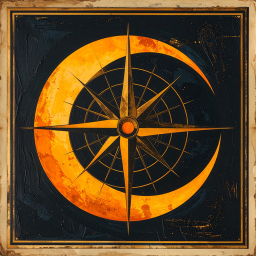

Every chapter mapped. Every SBS answer archived. Theories weighed against canon. Sourced, cross-referenced, and free.
Updated weekly from the One Piece Wiki — new chapters typically land 1–3 days after their wiki page appears.
Visualize where every character appears across the entire series. Click a character to highlight every chapter they're in — full appearance, flashback, silhouette, or cover story.
Every "Question Corner" entry from every volume Oda has ever published, searchable and categorized. Filter by Devil Fruits, characters, worldbuilding, or just Oda being Oda.
Vegapunk's encyclopedia. Characters · crews · fruits · races · weapons · locations · the whole reference layer of the Codex, organised by what you're looking for.
Browse Reddit's top fan theories — but every one has been weighed against actual canon. Each verdict cites Oda's own SBS quotes when relevant. No more taking strangers at their word.
Build theories with cited evidence. Pin Fact Cards, set stance, submit to the Codex.
Type any claim. Returns CONFIRMED · LIKELY · CONTRADICTED · UNKNOWN with citation chain.
Live feed of reader-submitted corrections, theory suggestions, and SBS fixes from GitHub Issues.
Every named fruit — Paramecia, Logia, Zoan, Mythical, Ancient. Type-coded with debut chapter.
Every canonically-confirmed Devil Fruit awakening in chronological order. Type-coded with status.
Every Marine bounty pinned to a corkboard. Sortable by amount or by chronology of debut.
Named canon ships — Going Merry, Sunny, Moby Dick, Queen Mama Chanter, and the rest of the fleet.
Every pirate crew, marine unit, revolutionary cell, and faction with full membership rosters.
Major canonical islands, kingdoms, and territories — region-coded by sea.
Hand-curated bloodlines and adoptive families. Each edge cites its confirming chapter.
Stack 2-6 characters side-by-side. Quick-pick the Strawhats, Yonko, Admirals, or D-Clan.
Vertical scroll through every saga with key canon events anchored to chapters.
The 1,181 chapters grouped by saga and arc — East Blue through Elbaph.
The mini-arcs Oda runs on chapter title pages. Often canon, often foreshadowing.
Q&As organised by subject — characters, fruits, world, ages, jokes, behind-the-scenes.
Every chapter as a coloured cell — brighter means more canon-verified facts attached.
Every JP and EN voice actor. Multi-role workhorses tagged — some VAs play 40+ characters.
Test how deep your knowledge runs. Trivia, lore, fruits, epithets, "guess the chapter".